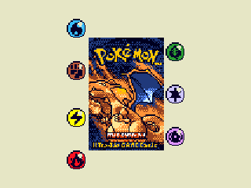
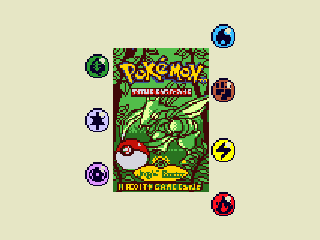
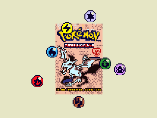
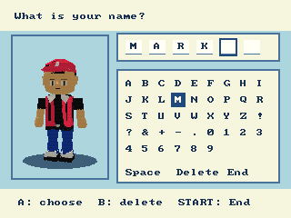


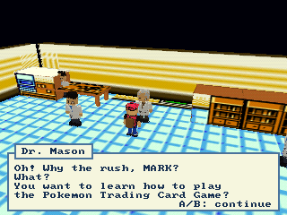


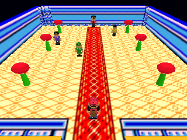
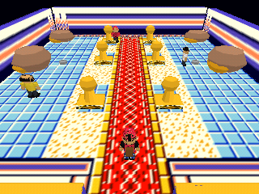
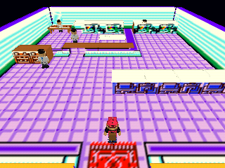
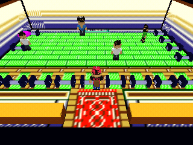
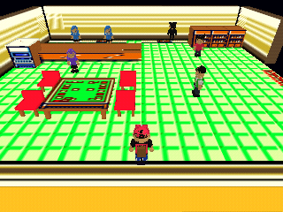
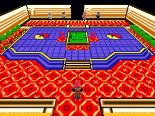

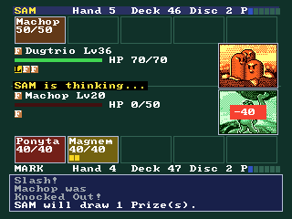
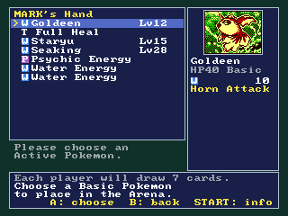
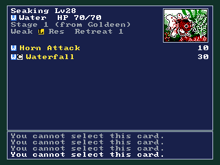


Native 320 × 240 RDP captures before VI antialiasing and dedithering. Labels are outside the game images. Assess art direction, composition, lighting, shadows, material and texture variety, character scale, camera, UI hierarchy, and how to make the game feel finished. Compare final VI scanouts separately when present.













